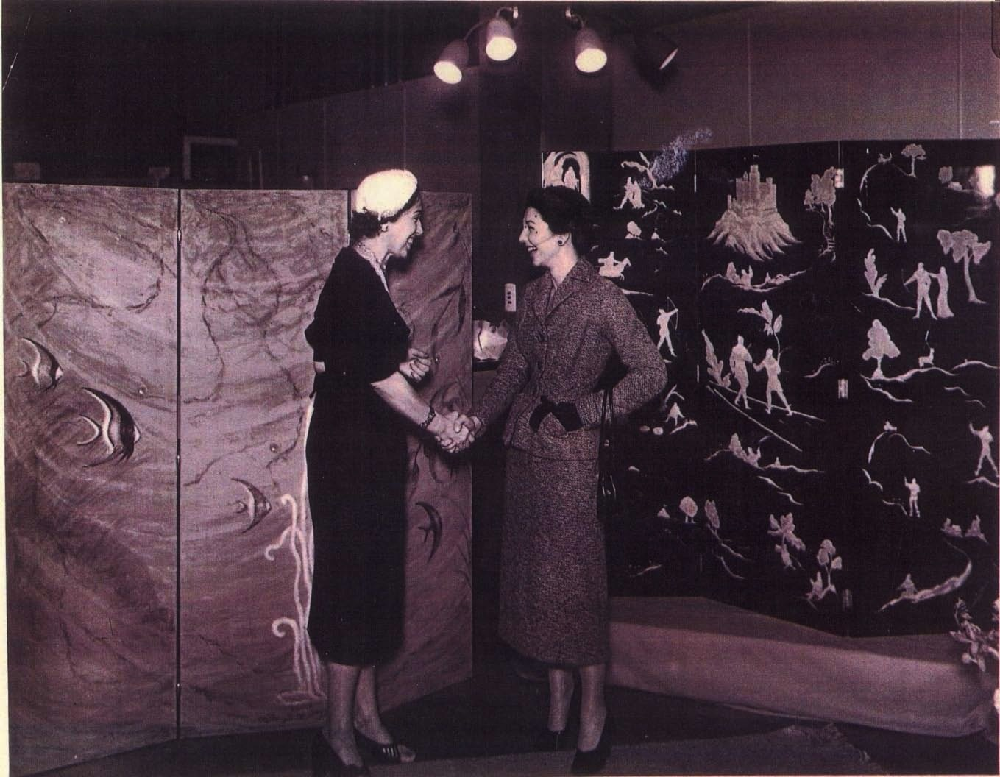
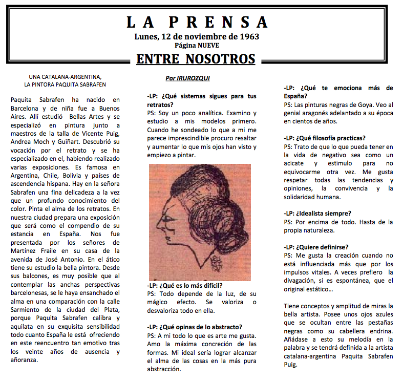
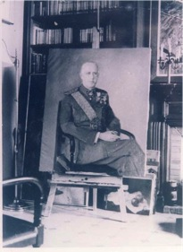
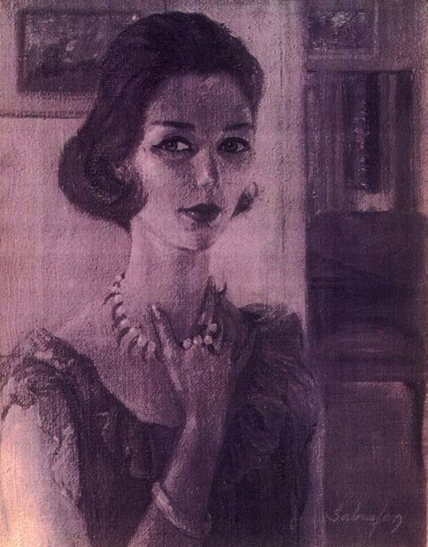
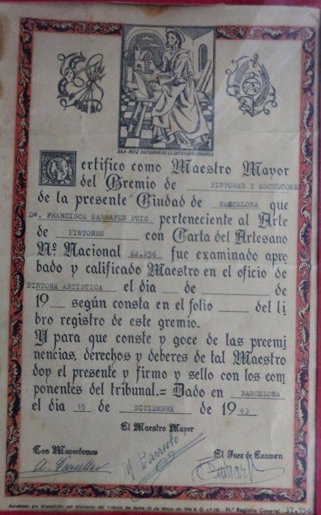
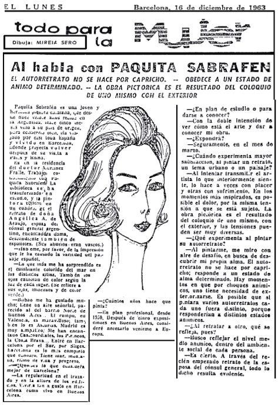
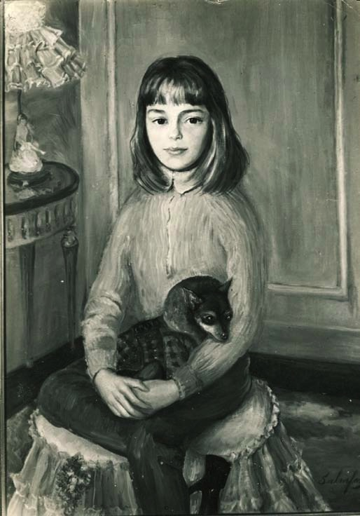

Sabrafen’s paintings are in the collections of numerous prestigious National Art Museums worldwide:
§ The National Museum of Czechoslovakia in Prague, ‘Pancho’.
§ Nagasaki Museum, Japan. ‘Muzumezo’, a Plea for Peace.
§ The Provincial Museum of Albacete, Spain, ‘Manchega’.
§Art Gallery of NSW, Sydney, Australia, ‘Australian Wild Flowers’.
§ The National Art Museum of China, ‘Light in the Darkness’ and ‘Fruits of the Harvest’ (2005).
Other oils are in the Atomic Bomb Museum; the 26 Martyrs Museum;Nagasaki Town Hall,etc.,. Her oil ‘Woman looking at her own reflection in the lake’ was selected to occupy a prime place in the Tokyo Metropolitan Art Museum (Nika exhibition 1993).
Other works by Sabrafen are found in private collections, public and private institutions, embassies and in religious institutions. Some on major altars, such as that of the Sanctuary of Capuchins in Alicante,‘Nuestra Señora de Orito,’ where approximately 200,000 people pilgrim each year. Sabrafen has 2 large original oil paintings there and it is said that her paintings have inspired much devotion. Others are in the church and convent of the Carmelitesin the pueblo of Lietor (Albacete, Castilla la Mancha), wherein there are many works painted by the artist, and others which she has restored. Sabrafen's painting of “Cruz Ortiz Real”the Nun declared a Saint by the Pope on the 21st of March, 2004 hangs in the founding church of the Salessianas in Alicante, Spain. Life-size posters of this painting were carried on banners to the Vatican and hang in the churches and convents of the Salessianas all over the world.
Paquita had a tumultuous childhood, beginning with the death of her mother at age 5 and moving from her home in Barcelona to France due to the Spanish Civil War. Then having to move again due to the Second World War to Buenos Aires, Argentina. It is here that she began her journey in art, taking lessons from famed artist Andrea Morch who was part of the impressionist movement in Argentina. She also studied under and was influenced by many other artists. Vincent Puig (former pupil of Spanish Artist Moises) taught her portraiture, drawing and painting in oils. She studied murals and landscapes with F. Guinart, learnt about painting human anatomy and marine scenery with Reverend Huget, and considered different animal figures with Viladrich as well as learning from and working with other masters. Many became her friends and considered her the young promise of their group.
In 1950 the first solo exhibitions of her oils were held in Argentina. Since then she exhibited on various occasions at ‘GaleriaMuller’, in the Alvear Palace in Buenos Aires, and the‘Galeria Renon’ in Rosario. She became the preferred portrait painter of distinguished society in Buenos Aires.
She has combined portrait and figure painting with landscapes and still life, and is a master in her profession. Among her latest works are the painting titled “Torn by War” – Eric Campbell, ABC Foreign Correspondent. This painting expresses his personal tragedy, the loss of his cameraman, Paul Moran who was the first Australian to die in the Iraq War. It is a historic painting marking the beginning of the war in Iraq with global significance.
Another more recent work is the portrait of Masako Ide, who in October 2004, was personally awarded a medal from the Emperor of Japan for her service to her country in the area of public health. The painting was completed March, 2005. These are historic paintings recording important incidents. She has also painted members of the Fijian Royal Family and noted politicians.
In June, 2005, Paquita Sabrafen was warmly received by the Deputy Director of the China National Art Museum, Mr Shulin Ma and by other senior curators and officials. They showed appreciation for the Artisit's work.
Sabrafen has received official honours in a number of countries, both for her art and her other qualities. She maintained her vocation with unstinting energy, thanks to her talent and her love of life which enabled her to show in her works the aspects of human endeavour.
By the end of he life she had travelled extensively throughout the world and had settled down to compose many of her works in an atmosphere of peace and healthy abundance in a small pueblo in La Mancha, Spain. A pueblo in which she lived with her husband Joaquin in an historic 300 year old mansion, which she had restored for her work and comfort. The Villa – Studio being situated on a mountain side, looking out over other mountains and a river flowing beneath.
Paquita Sabrafen dedicated a lifetime to her work and was a master in her profession. Her work and the fruits they bear are permanent.
Argentina/Spain
The front cover of the catalogue of Paquita Sabrafen’s exhibition at the Muller Gallery, Buenos Aires, 1950
Several news articles were written Sabrafen's early work.
Here are some english translations of those articles:
1. LaTribuna
In the Renon Gallery, an exhibition of oil paintings of the prestigious painter Paquita Sabrafen Puig was inaugurated. An artist proceeded by much deserved distinction that has echoed all over, made itself known to all the critics of the country.
Amongst the portraits exhibited some have featured well known personalities of our city.
On her visit she has made many interesting comments concerning the importance of the portrait as a never ending expression of the painter.
In Hall number 2 of the Renon Gallery, Cordoba, this afternoon an exhibition of 21 portraits, one natural scene and various landscapes will be inaugurated. She is an artist with an overwhelming number of qualities in her profession. In her youth and beauty she has dominated some of the most difficult aspects of painting.
2. “Le Capital” (Daily), Rosario, Argentina, 11th June, 1959. Plastic Arts
Paquita Sabrafen Puig
The difficult art of portrait painting is enriched by the excellent work of Paquita Sabrafen Puig as seen in her new exhibition at the Renon Gallery. Her feminine touch prevails throughout all her paintings with an exquisite good taste which reflects the inner life of her models. This is most obvious in work 12 and 13 where the spontaneity of her fluid style can be appreciated.

Sabrafen painted the portraits of prominent families in Buenos Aires, Argentina, such as Mrs .Blasbalg and her daughters
“The young artist Paquita Sabrafen (from Cataluña) is exhibiting 22 portraits, painted in oil, which reflect the extraordinary picturesque talent of their author and the soul of her figures, stemming from the classical school and hence, immortal.
The young artist reveals herself in all the sincerity of her art, her delicacy, subtlety and her good taste, which enables her to infuse an intense breath of life in her works...”
The words of Jose Quesada on radio Excelsior on that date referring to the exhibition realized at the Alvear Palace Hotel in Buenos Aires in September 1956.
Quoted on Catalogue for the exhibition held on the first of June, 1959 at Galeria Renon, Rosario, Argentina

Murals painted by Paquita Sabrafen, exhibited in Buenos Aires Argentina. Paquita Sabrafen with Pilar Mira y López (mother of Emilia Renouf)

LA PRENSA, Spain.
Monday, 11th November 1963,
Translation of Article:
“Entre Nosotros”, “Between Us”
A Catalan – Argentinean:
The Painter Paquita Sabrafen
Paquita Sabrafen was born in Barcelona and when just a young girl she went to Buenos Aires. There she studied Fine Arts and specialised in painting with masters such as Vicente Puig, Andrea Moch and Guinart. She discovered her vocation for the portrait and specialised in it, having realised various exhibitions. She is well known in Argentina, Chile, Bolivia and countries of Spanish decent. Miss Sabrafen possesses a fine delicacy and at the same time a profound knowledge of colour. She paints the soul (heart) in her portraits. In our city her exhibitions will be held.
LP: What do you think essentially attracted you to painting?
PS: Creation of forms. My ideal would be to reach the heart of things in their purest abstraction.
LP: What moves you most about Spain?
PS: The “black” paintings of Goya. I see his genius as being ahead of his times by hundreds of years.
LP: What philosophy did you practice?
PS: Whatever negativity life may have, I try to see it as a stimulus so as not to make further mistakes. I like to respect all tendencies and opinions, living with others and human solidarity.
LP: Are you always an idealist?
PS: Above all even of nature itself.
LP: Would you please define yourself?
PS: I love creation so long as it is influenced by nothing more than the vital impulses. At times I prefer digression if it is spontaneous rather than the original aesthetic.
The beautiful artist has concepts and an amplitude of “miras” that shine from within her black eyelashes, put this together with the melody in her words and there you have defined the artist Catalan – Argentine.

Honourable Spanish General, Dr Rius, President of the Red Cross in Barcelona, decorated with the Cross of Malta.
In 1963, Paquita Sabrafen was commissioned to do some portraits and exhibit her work in Barcelona, Spain. Some of those portraits were of Dr Gil’s family members. Dr Gil was the personal physician of Dictator, General Franco. (Whilst Sabrafen was at Dr Gil’s residence, she stayed in the room that was reserved for General Franco.)
Self Portrait", 1963
In Barcelona, December, 1963, Paquita Sabrafen had examinations approved and was qualified as a Master in the field of Artistic Painting by the Principal Guild of Master painters and Sculptures of the City of Barcelona.
Certificate of mastery from the Barcelona guild of master painters
Translation of certificate from the Guild of Painters and Sculptors of Barcelona:
I certify as Senior Maestro of the Guild (Gremio) of Painters and Sculptors of the present city of Barcelona that Ms Francisca Sabarfen Puig belonging to the Art of Painters with the Charter of Artisans National No. 62 256, was examined, approved and classified Master in the field of Pintora Artistica on the 15th day of December of 1963 according to the file of the registration book of this guild.
And for the record and enjoyment of the pre-eminences, rights and works of such a master. I am present and sign and seal by the members of the Tribunal.
Signed by: The Senior Maestro (El Maestro Mayor);
The Judge of the Examination (El Juez de Examen);
And the Administrator.

Monday, Barcelona, 16th December, 1963. “Talking with Paquita Sabrafen”
The self portrait is not a caprice- it is a determined frame of mind – a pictorial work of art is a result of placing oneself with the exterior.
Paquita Sabrafen is a young and beautiful Catalan painter who has been a resident of Argentina for 20 years. Five months ago she returned to the country of her origin, to get to know it well. She has travelled through most of Spain and has lived in Barcelona, where she plans to return after her visit to Paris and Rome.
It is in the residence of Doctor Martinez Fraile that we interview Paquita. The The library has transformed into a studio, and the painter is working on a painting. Angelica A de Araujo the wife of the Consul General of Argentina, also of Spanish decent.
L.P: Please tell me about your impression of the variety in the Spanish landscape.
P.S: What surprised me the most was the changing colour of the sea in different places. Also, eyes change colour depending on the light of each place......
LP: Will you exhibit? PS: Probably in March.
LP: When experimenting what gives you the greatest satisfaction, painting a portrait, an urban scene or a country landscape?
PS: Trying to transmit one’s inner feelings, the artist, does this at times with pleasure and at other times with suffering. In the most inspired moments pain is quite possible, due to the very tension that keeps one glued to the subject. A pictorial work of art is the result of being able to place oneself with the exterior and the tensions experienced may be quite diverse.
LP: What do you experience when you paint yourself portrait?
PS: When I paint a self portrait I look at myself with an air of defiance, trying to discover my own heart/ soul. The self portrait is not done out of caprice, it responds to a state of determined soul. There are times that for ‘animicos’ shocks, it is necessary to exteriorize oneself. It is possible that if I were to paint various self portraits each would be different, because it would be a response to distinct ‘animicos’ states.
LP: When you paint a portrait of others what are your thoughts?
PS: I try to reflect a medium level of the animico within the general social atmosphere of each person. It is true that while painting the portrait of the wife of the Consulate General, that has been evident.

"Lady with Hat"

"Girl with her Puppy"
In 1964, Paquita Sabrafen did not return to Argentina. She married Joaquin Hernandez Ruiz and had children. The family went to Paris 1969. There Paquita was reunited with her family friend Emilia Renouf, (Mira y Lopez) who was married to the then, Australian Ambassador in Paris, Alan Renouf.
As a talented Artist, Sabrafen was highly recommended and she and her family migrated to Australia. Soon after her arrival in Australia she painted Immigration Minister Michael Mackeller and his children; also, Lyn Strickland an Olympic runner (Bronze medalist) and business tycoon Riley, Keys – Arenas, organizer of the Shell Folkloric Festivals at the Opera House and others.
She was the secretary of the Ethnics Art Cooperative and participated in setting up exhibitions at the Westfield shopping centers. Sabrafen also taught Aboriginals to paint as part of a Government program.
"Painting of Guillermo Keys Arenas, Choreographer"
Australia
Information about Australia
Religious Institutions
Information about Churches about chapels
Fiji
Information about Fiji
Japan
Lots of Information about Japan
Poems
Information about Poems